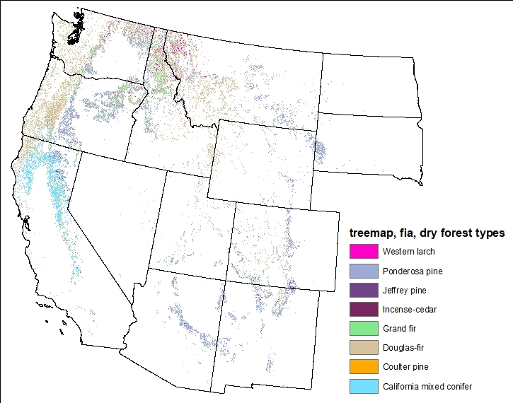
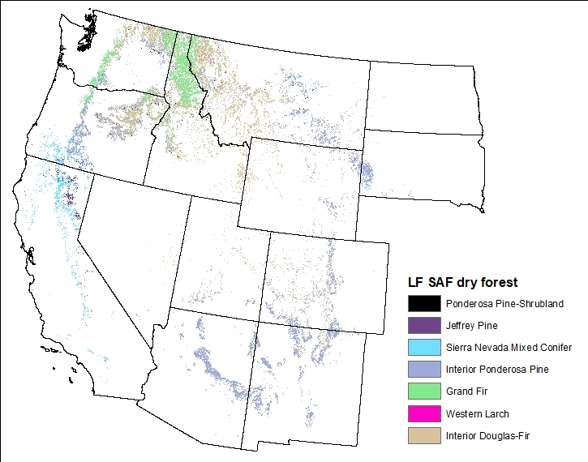
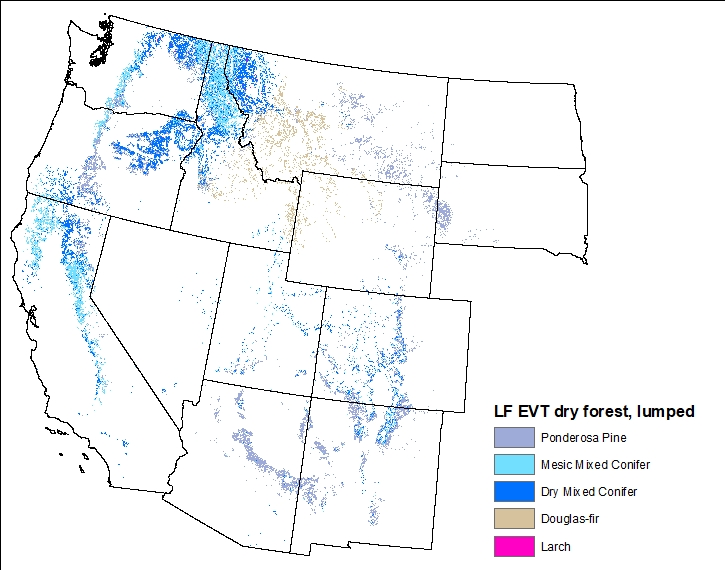

Last updated: 2022-03-11
Checks: 7 0
Knit directory: westernForests/
This reproducible R Markdown analysis was created with workflowr (version 1.7.0). The Checks tab describes the reproducibility checks that were applied when the results were created. The Past versions tab lists the development history.
Great! Since the R Markdown file has been committed to the Git repository, you know the exact version of the code that produced these results.
Great job! The global environment was empty. Objects defined in the global environment can affect the analysis in your R Markdown file in unknown ways. For reproduciblity it’s best to always run the code in an empty environment.
The command set.seed(20220228) was run prior to running the code in the R Markdown file. Setting a seed ensures that any results that rely on randomness, e.g. subsampling or permutations, are reproducible.
Great job! Recording the operating system, R version, and package versions is critical for reproducibility.
Nice! There were no cached chunks for this analysis, so you can be confident that you successfully produced the results during this run.
Great job! Using relative paths to the files within your workflowr project makes it easier to run your code on other machines.
Great! You are using Git for version control. Tracking code development and connecting the code version to the results is critical for reproducibility.
The results in this page were generated with repository version 40cd38c. See the Past versions tab to see a history of the changes made to the R Markdown and HTML files.
Note that you need to be careful to ensure that all relevant files for the analysis have been committed to Git prior to generating the results (you can use wflow_publish or wflow_git_commit). workflowr only checks the R Markdown file, but you know if there are other scripts or data files that it depends on. Below is the status of the Git repository when the results were generated:
Ignored files:
Ignored: .Rproj.user/
Note that any generated files, e.g. HTML, png, CSS, etc., are not included in this status report because it is ok for generated content to have uncommitted changes.
These are the previous versions of the repository in which changes were made to the R Markdown (analysis/recommendations.Rmd) and HTML (docs/recommendations.html) files. If you’ve configured a remote Git repository (see ?wflow_git_remote), click on the hyperlinks in the table below to view the files as they were in that past version.
| File | Version | Author | Date | Message |
|---|---|---|---|---|
| Rmd | 40cd38c | rswaty | 2022-03-11 | added KB’s tables, maps and recommendations |
| html | 22730a9 | rswaty | 2022-03-11 | Build site. |
| html | 43b1300 | rswaty | 2022-03-11 | Build site. |
| Rmd | 1f61dce | rswaty | 2022-03-11 | added KB’s tables, maps and recommendations |
| html | ea22713 | rswaty | 2022-03-11 | Build site. |
| Rmd | 6659ab0 | rswaty | 2022-03-11 | added KB’s tables, maps and recommendations |
| html | 09a13c1 | rswaty | 2022-03-11 | Build site. |
| Rmd | 7d59aed | rswaty | 2022-03-11 | brown |
| html | 03f70e9 | rswaty | 2022-03-11 | Build site. |
| html | e9fd192 | rswaty | 2022-03-11 | Build site. |
| html | db778d5 | rswaty | 2022-03-11 | Build site. |
| html | 73c6c15 | rswaty | 2022-03-11 | Build site. |
| Rmd | a00711a | rswaty | 2022-03-11 | added SAF-SRM pages |
| VEG TYPE | TreeMap FIA(1) | LF SAF(2) | LF EVT (3) | COMMENTS |
|---|---|---|---|---|
| Douglas-fir | Extensive in W. Cascades | Mapped Interior Douglas-Fir in dry forest locations | Restricted to Middle Rockies | Mapped concepts differ between products |
| Douglas-fir | Does not distinguish wet from dry DF | |||
| Ponderosa | More extensive in the Blues and Okanogan compared to SAF and EVT | Distribution similar between products; SAF and EVT are nearly identical (likely a result of the x-walk) | ||
| Mixed Conifer | Restricted to CA | Mapped in CA and Klamath | Mapped west-wide | Mapped concepts differ between products |
| Mixed Conifer | Restricted to CA | Mapped less compared to FIA and EVT in CA | Splits dry vs. Mesic | |
| Grand fir | Much more extensive in WA Cascades and ID Panhandle than FIA | Not mapped as its own type; this concept is mapped as mesic mixed con | ||
| Larch | Mapped more extensively than other products | Relatively minor type | ||
| OTHER OBSERVATIONS | Eastern types mapped in the west (e.g. loblolly pine) | Map comparison is confounded – all products derived from LF EVT map and FIA plots |
1 & 2 - Mapped core dry conifer forest types including grand fir, which could be present today on dry forest sites. Included a few minor dry conifer types (e.g. larch, incense cedar). Did not include oak/pine or juniper types. 3 - Mapped ponderosa pine, dry mixed conifer, and mesic mixed conifer types. Lumped regional variants to simplify display (e.g. Northern Rocky Mountains PIPO lumped w/ Southern Rocky Mountain PIPO)
| MAP | PRO | CON |
|---|---|---|
| TreeMap FIA | Dominant species identified (except mixed con) | To what extent is error in LF inherited in Tree Map? |
| Clear relationship to a plot | Doesn<U+0092>t distinguish wet vs. dry Doug-fir | |
| Advantages for calculating C? | Maps eastern types in the west | |
| LF SAF | Dominant species identified (except in mixed con) | Not independently mapped |
| LF EVT | Lumping up allows us to pull out types we want and improves accuracy | Can<U+0092>t identify dominant species |
| No x-walk needed | EVTs may not link well to literature | |
| Distinguishes dry vs. mesic mixed conifer |



sessionInfo()R version 4.1.2 (2021-11-01)
Platform: x86_64-w64-mingw32/x64 (64-bit)
Running under: Windows 10 x64 (build 19043)
Matrix products: default
locale:
[1] LC_COLLATE=English_United States.1252
[2] LC_CTYPE=English_United States.1252
[3] LC_MONETARY=English_United States.1252
[4] LC_NUMERIC=C
[5] LC_TIME=English_United States.1252
attached base packages:
[1] stats graphics grDevices utils datasets methods base
other attached packages:
[1] forcats_0.5.1 stringr_1.4.0 dplyr_1.0.7 purrr_0.3.4
[5] readr_2.1.2 tidyr_1.2.0 tibble_3.1.6 ggplot2_3.3.5
[9] tidyverse_1.3.1 kableExtra_1.3.4 workflowr_1.7.0
loaded via a namespace (and not attached):
[1] Rcpp_1.0.8 svglite_2.1.0 lubridate_1.8.0 getPass_0.2-2
[5] ps_1.6.0 assertthat_0.2.1 rprojroot_2.0.2 digest_0.6.29
[9] utf8_1.2.2 cellranger_1.1.0 R6_2.5.1 backports_1.4.1
[13] reprex_2.0.1 evaluate_0.14 highr_0.9 httr_1.4.2
[17] pillar_1.7.0 rlang_1.0.1 readxl_1.3.1 rstudioapi_0.13
[21] whisker_0.4 callr_3.7.0 jquerylib_0.1.4 rmarkdown_2.11
[25] webshot_0.5.2 bit_4.0.4 munsell_0.5.0 broom_0.7.12
[29] compiler_4.1.2 httpuv_1.6.5 modelr_0.1.8 xfun_0.29
[33] pkgconfig_2.0.3 systemfonts_1.0.3 htmltools_0.5.2 tidyselect_1.1.1
[37] fansi_1.0.2 viridisLite_0.4.0 withr_2.4.3 tzdb_0.2.0
[41] crayon_1.4.2 dbplyr_2.1.1 later_1.3.0 grid_4.1.2
[45] jsonlite_1.7.3 gtable_0.3.0 lifecycle_1.0.1 DBI_1.1.2
[49] git2r_0.29.0 magrittr_2.0.2 scales_1.1.1 vroom_1.5.7
[53] cli_3.1.1 stringi_1.7.6 fs_1.5.2 promises_1.2.0.1
[57] xml2_1.3.3 bslib_0.3.1 ellipsis_0.3.2 generics_0.1.2
[61] vctrs_0.3.8 tools_4.1.2 bit64_4.0.5 glue_1.6.1
[65] jpeg_0.1-9 hms_1.1.1 parallel_4.1.2 processx_3.5.2
[69] fastmap_1.1.0 yaml_2.2.2 colorspace_2.0-3 rvest_1.0.2
[73] knitr_1.37 haven_2.4.3 sass_0.4.0